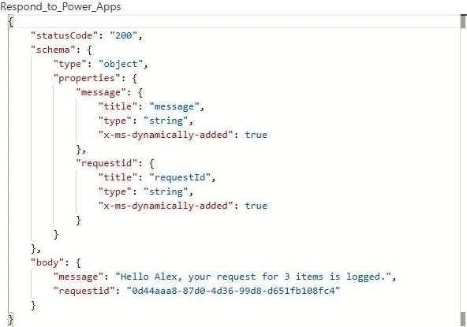

- Power Automate
- Level 9 · Integration and AI · 1 of 10
Calling a flow from Power Apps
A canvas app is good at screens and forms. Some work belongs on the server: sending mail as a shared mailbox, writing to several lists, calling an API the app can't reach. The app can hand that work to a cloud flow and wait for the answer.
App → flow → app
WhatA flow with the When Power Apps calls a flow (V2) trigger and a Respond to a Power App or flow action.
WhyServer-side work from an app, with typed inputs and a result the app can show.
DemoThe app sends a name and a quantity; the flow returns a message and a request ID.
One call
App:
LogRequest.Run("Alex", 3)Flow trigger receives Name Alex and Quantity 3
Compose Greeting
Respond to Power Apps: message + requestid
App:
varResult.message → Hello Alex, your request for 3 items is logged.

concat('Hello ', triggerBody()?['text'], ', your request for ', triggerBody()?['number'], ' items is logged.')| Piece | What it does |
|---|---|
triggerBody()?['text'] | The first text input (inputs are named by type: text, text_1, number…). |
triggerBody()?['number'] | The number input. |
The app side
// OnSelect of a Submit button
Set(
varResult,
LogRequest.Run(txtName.Text, Value(txtQty.Text))
);
Notify(varResult.message, NotificationType.Success)varResult is a record with the response fields (message, requestid), lower-cased in the app.
Things that matter in real apps
| Rule | Why |
|---|---|
| Respond early; do slow work after the Respond action | The app waits for the response |
| Connections run as the app user by default | Each user needs access to the data the flow uses |
| Re-add the flow in the app after changing inputs | The old signature stays cached |
Pass tables as JSON (JSON(colItems)) and Parse JSON in the flow | Inputs are single values |
New to this? Start from the basics optional
Canvas app: a Power Apps app whose screens you design.
Response: data the flow returns; without it the app gets nothing.
Common mistakes
- The old V1 trigger with “Ask in PowerApps”.
- Long loops before the Respond action.
- Forgetting users need the flow's data permissions.